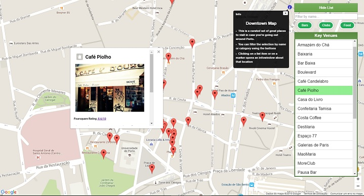

Paulo Esteves
Front-End Web Developer
Hi, my name is Paulo Esteves. I'm a marketing graduate and after a few years working in either video production or marketing, I decided to drop it all and study programming full-time. I've always found the main idea behind programming - the possibility of building almost anything from scratch with just a computer - utterly fascinating. I've been interested on this since high school, but only recently I actually started getting my hands on every possible online programming course that I could. Eventually, I ended up finishing all of Udacity's Front-End Nanodegree courses. Please, have a look at the following projects. They also include some context and their respective Github repositories.
Featured Work
Calorie Tracker
Downtown Map
Arcade Game (frogger)

Feedreader Testing